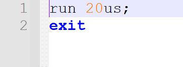

这是一篇针对计组P4的自动化测试学习
写在开头
在笔者看来，由于P5,P6,P7需要大量的数据作为支持，且均为Verilog语言，所以在P4学好自动化测试是十分有必要的，它可以免除你课上担心课下CPU有问题的后顾之忧，大大增加你PASS的几率。
而且，从P4开始，我们的自动化测试对拍对象不是小伙伴，完全可以是Mars，对我们的测试难度降低了很多，笔者在这里十分建议大家学一学自动化测试。
蒟蒻合理生成不会陷入死循环不会报错的指令，并了解到对Verilog进行自动化测试的相关方法。
工具选择 作者对于Verilog的学习全程采用ISE，（学会ISE是能做P8的基础） 所以我们这里介绍ISE的命令行操作。
命令行学习 MARS命令行 官方教程
速通版本 工具准备 来到P4,原有的MARS已经不能满足我们的要求，因此我们需要一个可以显示每一条指令对GRF和DM读写信息的MARS ，笔者在此为大家准备了一个:Mars_perfect ,提取码：jkvq,需要的uu可以自取。
生成机器码 1 java -jar Mars_perfect.jar mc CompactDataAtZero a dump .text HexText code.txt nc test.asm
该命令行的意思是，运行Mars_perfect.jar将test.asm文件中.text部分指令转换为机器码输出到code.txt中（中间是参数，具体意思见官方教程）
运行MARS生成标答 1 java -jar Mars_perfect.jar mc CompactDataAtZero nc test.asm > mar.txt
该命令行的意思是，运行Mars_perfect.jar将test.asm中每一条指令对GRF和DM的修改输出到mar.txt中
TIPS 以上运行时均需保证Cmd运行在Mars_perfect.jar和test.asm的根目录下
结果展示
ISE命令行 配置系统环境 要顺利利用命令行运行ISE，我们需要首先配置系统环境,将ISE主题文件路径配置到系统变量中。
当然，如果使用Python实现自动化，则无需配置，具体见后 准备生成可执行CPU文件 要生成可供自动化测试执行的CPU文件，我们首先需要生成和顶层模块同名的.prj和.tcl文件:
.prj是告诉命令行要编译哪些.v文件:
.tcl是告诉命令行要让CPU运行多长时间。
自动化生成 .prj和.tcl文件：1 2 3 4 5 6 7 8 9 10 11 12 file_list = [] for i, j, k in os.walk(p_road): for file in k: if file.endswith(".v" ): file_list.append(file) with open (p_road + "\\mips.prj" , "w" ) as prj: for i in range (len (file_list)): prj.write("Verilog work \"" + p_road + "\\" + file_list[i] + "\"\n" ) with open (p_road + "\mips.tcl" , "w" ) as tcl: tcl.write("run " + run_time +";\nexit" ) prj.close() tcl.close()
生成可执行CPU文件 1 2 3 ISE本体路径 + "\\bin\\nt64\\fuse -nodebug -prj " + CPU路径 + "\\mips.prj -o mips.exe mips_tb > compile_log.txt" 举例： ISE本体路径：G:\\ISE\\14.7 \\ISE_DS\\ISE 举例： CPU路径：C:\\Users\\Unicorn\\Desktop\\P4\\P4exp\\SingleCPU
该命令行的意思是，利用ISE将CPU生成可执行文件，文件名为mips.exe。
运行可执行CPU文件 1 mips.exe -nolog -tclbatch " + CPU路径 + " \\mips.tcl> raw_out.txt
该命令行的意思是，利用生成好的mips.exe结合mips.tcl里的运行时长进行运行，并将结果重定向输出到同目录下的raw_out.txt中
结果展示 至此，我们获得了一个这样的输出文件：
Python实现 优化结果 对比以上两条输出结果，我们发现，ISE的输出会有一些烦人的前缀，导致文件比较失败。所以我们需要对其进行优化，利用Python处理文件将其前缀删去：1 2 3 4 5 6 7 8 9 myfriendmem = open ("raw_out.txt" , encoding="utf-8" ).read() j = 0 while myfriendmem[j] != '@' : j = j + 1 mymem = '' for i in range (j, len (myfriendmem)): mymem = mymem + myfriendmem[i] with open ("verilog.txt" , "w" , encoding="utf-8" ) as file: file.write(mymem)
无人值守测试 在P3中我们实现的只是一个简单的自动化，点击一次运行，执行一次，比较一次，在P4我们做出革新，点击一次运行，输入执行次数，便可以一直执行，每一次的比较结果追加到result.txt中，只有“Accept”和“Wrong answer”，程序运行结束后可在该文件中查看哪次比较为“Wrong answer”,进而去进一步查看详细的比较文件，看看是第几个指令产生了不同。
diff模块获取详细比较文件 1 2 3 4 5 6 7 8 compare_file(r'verilog.txt' , r'mar.txt' , 'result' +str (i+1 )+'.html' ) def compare_file (file1, file2, out_file ): file1_content = read_file(file1) file2_content = read_file(file2) d = difflib.HtmlDiff() result = d.make_file(file1_content, file2_content) fb = open (dir_name_1 + out_file, mode='w' , encoding='utf-8' ) fb.write(result)
手动编写比较方法，确定粗略比较信息 1 2 3 4 5 6 7 8 9 10 11 12 13 14 15 16 17 18 19 20 21 22 23 co = open (dir_name_2 + 'result.txt' , mode='a' , encoding='utf-8' ) co.write("第" +str (test_order)+"次比较结果:" +'\n' ) print ("第" +str (test_order)+"次比较结果:" )with open ("mar.txt" , "r" ) as out_1: out_std = out_1.readlines() out_std.remove('\n' ) with open ("verilog.txt" , "r+" ) as out_2: out_test = out_2.readlines() with open (".\\log.txt" .format (test_order), "w" ) as log: flag = 0 if len (out_std) > len (out_test): flag = 1 ; else : for i in range (len (out_std)): if out_std[i] != out_test[i]: flag = 1 ; if flag: print ("Wrong Answer!" ) co.write("Wrong Answer!" +'\n' ) else : print ("Accepted!" ) co.write("Accepted!" +'\n' ) co.close()
储存每次详细比较文件和ASM文件 目的是便于出现错误答案时进行查找，复现问题：1 2 3 4 5 6 dir_name_1 = 'C:\\Users\\Unicorn\\Desktop\\P4\\P4exp\\P4全自动测试\\测试记录\\比较文件\\' fb = open (dir_name_1 + out_file, mode='w' , encoding='utf-8' ) fb.write(result) dir_name = 'C:\\Users\\Unicorn\\Desktop\\P4\\P4exp\\P4全自动测试\\测试记录\\mars文件\\' f_2 = open (dir_name + 'test' +str (test_order)+'.asm' , "w" ) f_2.writelines(list_temp)
其余细节 python提供了os模块代替手动执行命令行，示例如下： 1 2 3 os.environ["XILINX" ] = xilinx_path os.system(xilinx_path + "\\bin\\nt64\\fuse -nodebug -prj " + p_road + "\\mips.prj -o mips.exe mips_tb > compile_log.txt" ) os.system("mips.exe -nolog -tclbatch " + p_road + "\\mips.tcl> raw_out.txt" )
数据生成思路 由于和P3的指令集相同，所以这里无需新的数据生成，利用P3即可。
结语 至此，我们完成了Verilog的测试构建，该Python文件将支持我们P4-P7的测试，之后根据不同的Project在P4的测试上进行小修小补即可，所以，恭喜正式步入自动化测试的大门！
这是一条很艰辛的道路，后续的数据构造将花费大量时间，但我也保证，这是计组成神之路！
Python自动化测试框架代码 1 2 3 4 5 6 7 8 9 10 11 12 13 14 15 16 17 18 19 20 21 22 23 24 25 26 27 28 29 30 31 32 33 34 35 36 37 38 39 40 41 42 43 44 45 46 47 48 49 50 51 52 53 54 55 56 57 58 59 60 61 62 63 64 65 66 67 68 69 70 71 72 73 74 75 76 77 78 79 80 81 82 83 84 85 86 87 88 89 90 91 92 93 94 95 96 97 98 99 100 101 102 103 104 105 106 107 108 109 110 111 112 113 114 115 116 117 118 119 120 121 122 123 124 125 126 127 128 129 130 131 132 133 134 135 136 137 138 import difflibimport osimport reimport sysimport timeimport filestoolsfrom filediff.diff import file_diff_comparep_road = "C:\\Users\\Unicorn\\Desktop\\P4\\P4exp\\SingleCPU" run_time = "50us" xilinx_path = "G:\\ISE\\14.7\\ISE_DS\\ISE" dir_name = 'C:\\Users\\Unicorn\\Desktop\\P4\\P4exp\\P4全自动测试\\测试记录\\mars文件\\' dir_name_1 = 'C:\\Users\\Unicorn\\Desktop\\P4\\P4exp\\P4全自动测试\\测试记录\\比较文件\\' dir_name_2 = 'C:\\Users\\Unicorn\\Desktop\\P4\\P4exp\\P4全自动测试\\测试记录\\' error = [] def generate (test_order ): command = "C语言.exe" os.system(command) f_1 = open ('test.asm' , "r" ) list_temp = f_1.readlines() f_2 = open (dir_name + 'test' +str (test_order)+'.asm' , "w" ) f_2.writelines(list_temp) f_1.close() f_2.close() def run_mar (): os.system("java -jar Mars_perfect.jar mc CompactDataAtZero a dump .text HexText code.txt nc test.asm" ) os.system("java -jar Mars_perfect.jar mc CompactDataAtZero nc test.asm > mar.txt" ) def run_ise (): file_list = [] for i, j, k in os.walk(p_road): for file in k: if file.endswith(".v" ): file_list.append(file) with open (p_road + "\\mips.prj" , "w" ) as prj: for i in range (len (file_list)): prj.write("Verilog work \"" + p_road + "\\" + file_list[i] + "\"\n" ) with open (p_road + "\mips.tcl" , "w" ) as tcl: tcl.write("run " + run_time +";\nexit" ) prj.close() tcl.close() os.environ["XILINX" ] = xilinx_path os.system(xilinx_path + "\\bin\\nt64\\fuse -nodebug -prj " + p_road + "\\mips.prj -o mips.exe mips_tb > compile_log.txt" ) os.system("mips.exe -nolog -tclbatch " + p_road + "\\mips.tcl> raw_out.txt" ) def process (): myfriendmem = open ("raw_out.txt" , encoding="utf-8" ).read() j = 0 while myfriendmem[j] != '@' : j = j + 1 mymem = '' for i in range (j, len (myfriendmem)): mymem = mymem + myfriendmem[i] with open ("verilog.txt" , "w" , encoding="utf-8" ) as file: file.write(mymem) def copy_file (name, target_road ): f_1 = open (name, "r" ) list_temp = f_1.readlines() f_2 = open (target_road + "\\" + name, "w" ) f_2.writelines(list_temp) f_1.close() f_2.close() def file_cmp (test_order ): co = open (dir_name_2 + 'result.txt' , mode='a' , encoding='utf-8' ) co.write("第" +str (test_order)+"次比较结果:" +'\n' ) print ("第" +str (test_order)+"次比较结果:" ) with open ("mar.txt" , "r" ) as out_1: out_std = out_1.readlines() out_std.remove('\n' ) with open ("verilog.txt" , "r+" ) as out_2: out_test = out_2.readlines() with open (".\\log.txt" .format (test_order), "w" ) as log: flag = 0 if len (out_std) > len (out_test): flag = 1 ; else : for i in range (len (out_std)): if out_std[i] != out_test[i]: flag = 1 ; if flag: print ("Wrong Answer!" ) co.write("Wrong Answer!" +'\n' ) else : print ("Accepted!" ) co.write("Accepted!" +'\n' ) co.close() def read_file (filename ): try : with open (filename, 'r' ) as f: return f.readlines() except IOError: print ("ERROR: 没有找到文件:%s或读取文件失败！" % filename) sys.exit(1 ) def compare_file (file1, file2, out_file ): file1_content = read_file(file1) file2_content = read_file(file2) d = difflib.HtmlDiff() result = d.make_file(file1_content, file2_content) fb = open (dir_name_1 + out_file, mode='w' , encoding='utf-8' ) fb.write(result) print ("输入测试次数:" )test_times =int (input ()) co = open (dir_name_2 + 'result.txt' , mode='w' , encoding='utf-8' ) co.write("测试次数:" +str (test_times)+'\n' ) co.close() for i in range (test_times): generate(i+1 ) run_mar() run_ise() process() compare_file(r'verilog.txt' , r'mar.txt' , 'result' +str (i+1 )+'.html' ) file_cmp(i+1 ) time.sleep(1 ) print ("Done!" + '\n' )
数据生成器 太长了所以放链接：https://github.com/ForeverYolo/2022-BUAA-CO/tree/main/P4
如果使用了本数据生成器，笔者亲测可以通过2022年P4课上强测！
P4数据生成器代码行数：304行